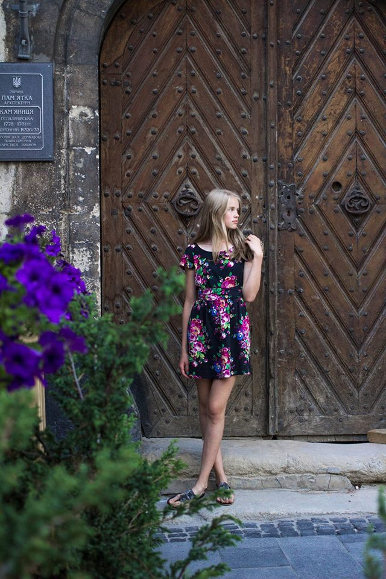

Ksenya Klakovych
Ksenya Klakovych
PHOTOGRAPHY

A little bit about me
I started making photos a few years ago and I can tell you that I enjoy making people happy by doing this! My favourite object of photographing is every person but I also love photoshooting nature. There is one nice quote: "Save moments not things", as I think it's a good way to save moments of your life in photos.
I am studing in 11th grade at school now. My other hobbies are playing the guitar, piano and cooking.
Welcome!